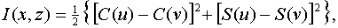
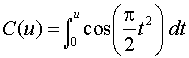
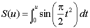
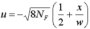
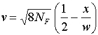
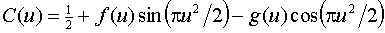
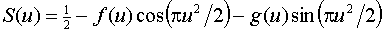
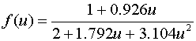

1. Description
Consider a unit amplitude, monochromatic plane wave of wavelength
 traveling in the positive z-direction. Furthermore, suppose that this wave is normally incident upon an opaque screen that occupies the x-y plane (i.e., the plane z= 0) and has a slit in it which is centered about the origin. The slit is long in the y-direction and of width w in the x-direction. In this submodule, the irradiance, I(x,z) on an observation screen that occupies the plane z = constant > 0 is calculated and displayed on the observation screen.
traveling in the positive z-direction. Furthermore, suppose that this wave is normally incident upon an opaque screen that occupies the x-y plane (i.e., the plane z= 0) and has a slit in it which is centered about the origin. The slit is long in the y-direction and of width w in the x-direction. In this submodule, the irradiance, I(x,z) on an observation screen that occupies the plane z = constant > 0 is calculated and displayed on the observation screen.
2. Calculations
The intensity on the observation screen is given by the formula

where C(u) and S(u) are the well-known Fresnel integral functions,
,
,
and
,
.
Very accurate numerical routines exist for calculating the Fresnel integral functions. However for our purposes speed of calculation is very important and we chose to evaluate them in the following way. C(u) and S(u) can always be rewritten in terms of the Fresnel auxiliary functions, f(u) and g(u) as
,
.
f(u) and g(u) can be approximated by means of rational functions as

These approximations are each accurate to within ± 0.002 and the last four formulas allow the Fresnel integral function to be calculated very rapidly. We used these formulas to calculate the irradiance for all values of x and z.

Created by Srihari" TARGET=EXTERNAL>Srihari Angaluri
and Kiril Vidimce
Send comments to comments@webtop.org